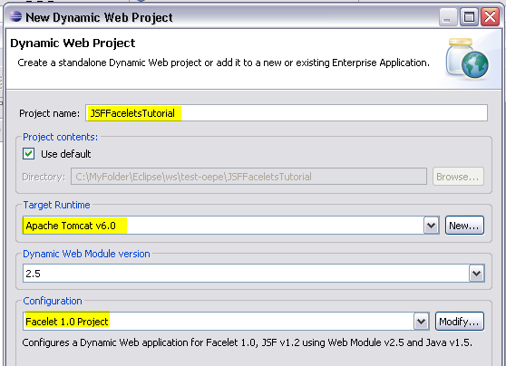
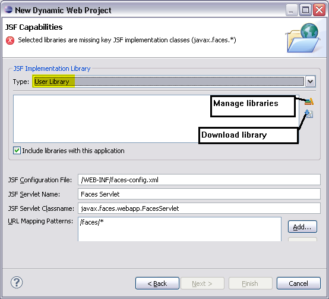
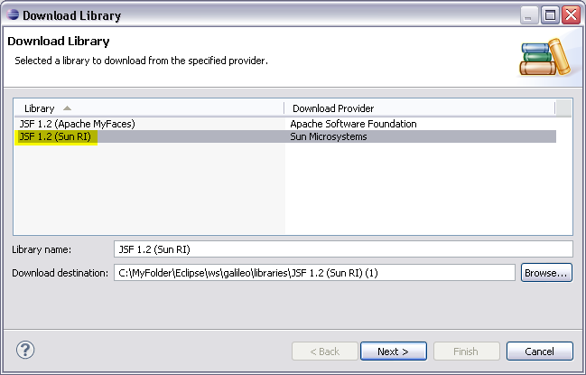
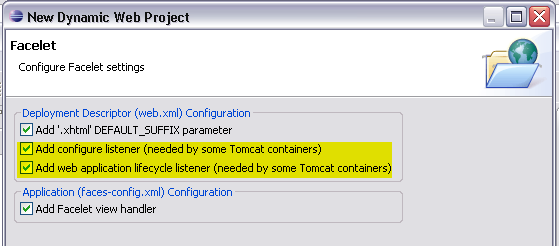
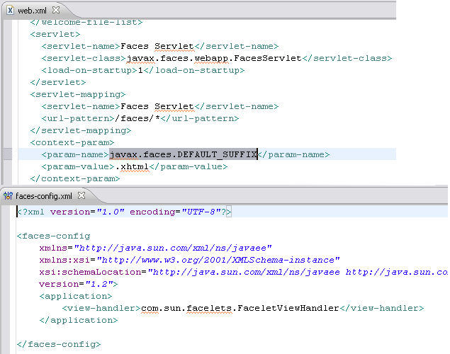
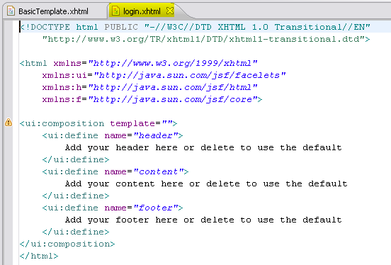
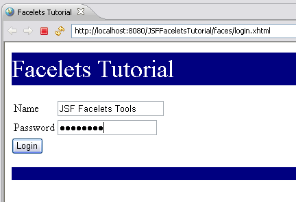

Summary
In this tutorial we will build and execute a JSF Facelets application and highlight the features contributed by the JSF Facelets Tools Incubator Project.
In this tutorial we will create and execute a web application
using the JSF Facelets technology. Facelets is an extension to JavaServer Faces(JSF) that uses XHTML syntax to define a JSF page. The JSF Facelets Tools
project is a WTP incubator project that has provided features that
simplifies building web applications using Facelets. The tool enables
the current features of the JSF Tools Project to be used in a dynamic web project
for Facelets. These include an enhanced HTML Source Editor that provides
Content Assist and Validation for Facelets Tags.
Create a New Dynamic Web Application with the name of JSFFaceletsTutorial.
Set the target runtime to the Apache Tomcat 6.0
In the configuration section, select the Facelet 1.0
Project. Skip the next panel to get to the JSF Capabilities page.

On the JSF Capabilities page, from the drop-down for the Type of
the JSF Library, select User Library.

Click on the Download library icon.
The Download Library dialog is displayed with the list of providers for
the JSF implementation JAR files. Select the library from Sun
Microsystem. Click Next. Accept the license and hit Finish

On the Facelet page, select all the checkboxes.

Your JSF application has been created. Note that the web.xml file
has been updated with the Faces Servlet and servlet-mapping, the default
suffix for a JSF page has been set to XHTML. A JSF application
configuration file (faces-config.xml) has been created and configured to
use Facelets as the view handler.

 Edit the template file following the instructions in the template. You
will create and include the header and footer templates. Your final
template file should be as shown below.
Edit the template file following the instructions in the template. You
will create and include the header and footer templates. Your final
template file should be as shown below. Create a JSF page with Facelets tags that will use the template
created in the previous step. Use the HTML Page wizard to create a page
called login.xhtml in the Web Content folder of the new
application. In the Select Templates page of the wizard, select the New
Facelet Composition Page template. Click Finish.


You will now execute the login.xhtml page against the
Apache Tomcat server. Choose Run on Server using the context menu
while selecting the login.xhtml page in the navigator. Choose
your Apache Tomcat server and set it up as required if you had not
already done so. Click Finish. You should see from the Console view that
the Tomcat server starts and then you should see the executing login
page appear in the Web Browser like below.

Congratulations! You have created and executed your first JSF Facelets application using the Eclipse WTP Incubator JSF Facelets Tools Project.